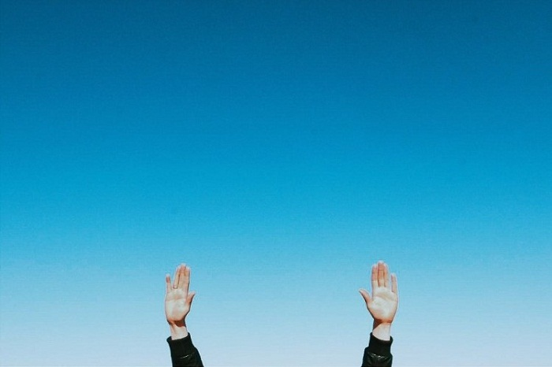

Tôi vẫn hay nhìn về nơi xa xôi trên bầu trời trong những lúc buồn nhất của cuộc đời mình. Không dám nghĩ về một ai đó đã từng đi qua trong đời tôi, vì thật sự trong những giây phút ấy điều tôi mong muốn chỉ là: “Dù ở nơi xa xôi đó điều gì có đang
đến tôi cũng sẽ chấp nhận không trốn tránh”. Được đối diện với những thứ không bao giờ biết trước được có lẽ là một cái cảm giác rất lạ mà có lẽ rằng suốt cuộc đời mình tôi vẫn khao khát được cảm nhận. Cuộc sống này nếu không biết trước điều gì
sẽ đến có khi cũng là một niềm hạnh phúc. Hồi còn bé tôi vẫn ước mơ mình có một đôi cánh để được bay lượn trên bầu trời rộng lớn kia. Có lẽ đó là cảm nhận về sự tự do trong suy nghĩ của tôi. Tự do được đi tới nơi mình muốn, tự do được nhìn ngắm
từ một nơi rất cao xuống những con người bé nhỏ. Và mãi cho tới tận khi mình lớn tôi mới biết rằng để có được sự tự do lại khó đến như vậy. Nhìn những cánh chim bay tôi mới nhận ra rằng ở nơi bầu trời đó còn biết bao điều tôi vẫn chưa từng biết
đến, chưa thể hiểu được. Giá trị thực sự và như thế nào mới là tự do? Tôi sẽ phải tự đi tìm câu trả lời cho chính cuộc đời mình. Tự do vốn không phải đơn giản là làm điều mình thích, làm những thứ mình muốn hay sống một cuộc sống mà không vướng
bận một điều gì. Tự do thực sự là khi tôi có thể cảm nhận rằng trong một phút giây nào đó của cuộc đời mình tôi có thể ngồi lặng yên và nhắm mắt ngủ quên mà không thấy lo lắng hay phiền muộn nào trong lòng cả. Tự do thực sự là khi mình đã làm
tất cả mọi thứ mình có thể và ngước nhìn lên bầu trời xanh thẳm rồi chợt nhủ với lòng rằng mình đã làm được tất cả những gì mình có thể rồi, phần còn lại hãy để thời gian trả lời. Tự do là khi một ngày nào đó thôi theo đuổi những thứ xa xôi vốn
không thuộc về bản thân, những thứ mà mình phải gồng mình lên để níu giữ hay tranh giành với đời. Tự do là khi vào phút giây cuối cùng của cuộc đời mình tôi vẫn có thể nở nụ cười thanh thản trên môi. Không còn nuối tiếc một điều gì trong đời.

Những con người trong cuộc đời vẫn hàng ngày sống trong biết bao rào cản, trách nhiệm và lương tâm. Họ có thể đạt tới sự tự do như những cánh chim không? Tôi nghĩ rằng tôi và họ hoàn
toàn có thể có được sự tự do đó. Tôi vẫn hay thắc mắc rằng tại sao khi nhìn những con chim có thể đứng vững trên những cành cây rất mong manh, những chiếc lá nhỏ bé. Và rồi tôi nhận ra rằng điều đã khiến cho những con chim đó có thể đứng vững
trong những hoàn cảnh tưởng chừng như sắp ngã tới nơi đó là sức mạnh của lòng tin. Những chú chim đó chúng không đặt niềm tin vào cành cây hay chiếc lá mà lòng tin thực sự nằm ở đôi cánh luôn sẵn sàng bay lên trên bầu trời. Con người nếu có thể
luôn tin tưởng vào chính bản thân mình, tin tưởng vào những thứ mà họ yêu thương thì họ sẽ đứng vững trong cuộc đời này. Với tất cả sự tự do và niềm kiêu hãnh. Bầu trời hay nói cách khác nó chính là cái thế giới nhỏ bé của mỗi con người có lẽ
rằng không thể nào như nhau. Bầu trời trong mắt những đứa trẻ hạnh phúc là một thế giới chỉ có ba và mẹ cùng với sự yêu thương. Tôi có thể nhìn thấy những ánh mắt xanh thăm thẳm đang háo hức nhìn về phía xa xôi của chúng với biết bao niềm tin
yêu vào cuộc sống. Tôi rất thích nhìn bầu trời trong đôi mắt của những đứa trẻ đang hồn nhiên nô đùa. Một màu xanh thăm thẳm với biết bao niềm tin yêu vào cuộc sống. Nó trong xanh hơn bất cứ thứ gì tôi từng biết vì bởi lẽ trong những trái tim
đó chúng chỉ biết cảm nhận bằng tất cả những niềm hân hoan hạnh phúc. Có lẽ rằng bầu trời đó là thứ mà dù lớn như thế nào đi nữa chúng ta cũng từng có lúc mơ về những tháng ngày hạnh phúc đã qua ấy. Còn trong mắt những đứa trẻ chưa từng biết đến
đầy đủ và hạnh phúc thì bầu trời đó thật sự u tối vì những đói khát và thiếu thốn cả về vật chất lẫn tinh thần. Và rồi khi lớn lên đó là quãng thời gian u tối nhất trong cuộc đời, những tháng ngày thật sự đáng quên.